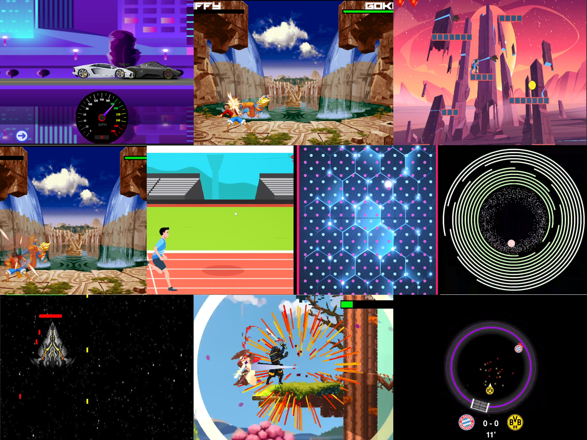

These are some of
my projects.
From fighting games
to complicated games.

From fighting games
to complicated games.

Technologies: Unity | C# | Netcode for GameObjects | Unity Relay | Mobile Optimization
Developed a lightweight, real-time multiplayer racing game inspired by the “mini-Asphalt” style, built entirely in Unity. Leveraged Netcode for GameObjects with Unity Relay for smooth online play, enabling players to join matches via join codes and race with physics-accurate cars. Implemented WheelColliders for realistic vehicle handling, complete with reverse lights (via Light Probes), engine sounds, and synchronized flame and smoke effects visible to all players in real time.
This project demonstrates strong skills in multiplayer networking, performance optimization, gameplay systems engineering, and visual polish — combining technical problem-solving with a high-quality player experience.
Technologies: Blender | Unity | URP | Light Probes | Low-Poly Optimization
Created a highly detailed 3D recreation of the Faculty of Engineering and Technology (FET) Department in Blender, designed as part of my Final Year Project to showcase architectural modeling expertise. The project offers an immersive, walkable environment on both desktop and mobile, allowing users to virtually explore the department as if physically present. Lighting was handled using Unity’s Universal Render Pipeline (URP) with baked lightmaps, realistic sun effects, and strategic light probe placement for optimal visual quality.
Alt+D linked duplication instead of Shift+D, drastically reducing memory usage and improving render times.This project demonstrates expertise in architectural visualization, low-poly optimization, lighting design, and environment performance tuning for interactive 3D applications.
A 2D open-world game where players explore, find, and battle bosses. The game features a variety of combat moves while bosses use algorithms to track the player. Every detail, from animated rain, leaves, and trees, enhances the immersive experience. The background is built with editable tilemaps, making the entire environment fully customizable.
A 2D physics-based simulation where two balls bounce around within the same circular boundary, both aiming for the same goal. The game uses vector mathematics and advanced collision detection to simulate realistic motion and interactions between the balls, creating a dynamic and unpredictable environment. Everything in the game is fully automated, with no player input required.
A 2D physics-based simulation where two balls bounce around within the same circular boundary, both aiming for the same goal. The game uses vector mathematics and advanced collision detection to simulate realistic motion and interactions between the balls, creating a dynamic and unpredictable environment. Everything in the game is fully automated, with no player input required.
A rhythm-based game where MIDI files drive music that syncs with a square colliding with platforms. The game features precise timing mechanics to ensure the collisions align perfectly with the music, creating a visually and audibly immersive experience. Various effects enhance the gameplay, though they can't all be captured in a single video.
A 2D fighting game built in Unity featuring Goku and Luffy. The game utilizes animated sprites and dynamic backgrounds to enhance the visual experience. It includes engaging audio, damage effects, and polished gameplay mechanics for a fun and immersive player experience.
A simple racing game focused on timing gear changes to outpace the opponent. The core mechanics revolve around precise gear shifting, with an emphasis on realistic speed and sound effects. The game delivers an immersive audio experience, ensuring the gear shift sounds sync perfectly with gameplay.
I designed and developed a boss rush game for a game competition, completing it in about a month. It was a challenging yet rewarding experience, especially integrating all the mechanics and sound effects.